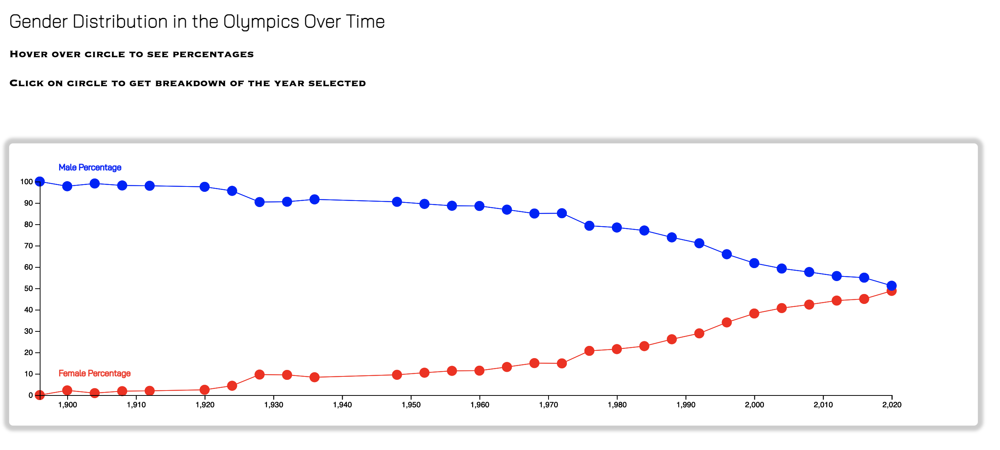
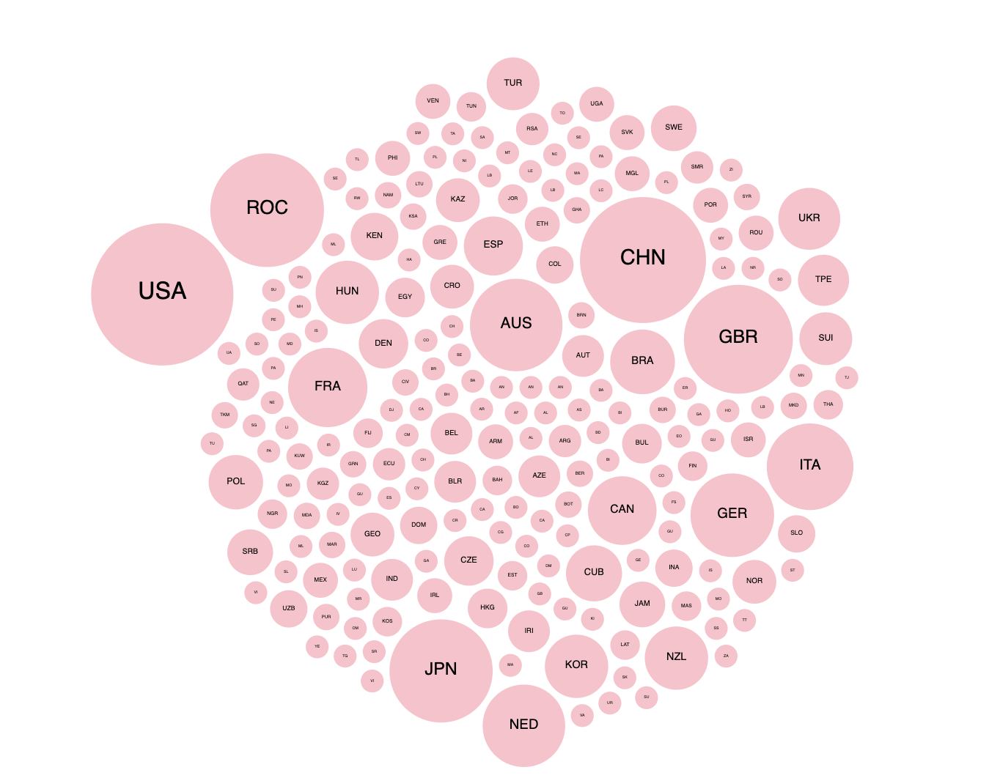
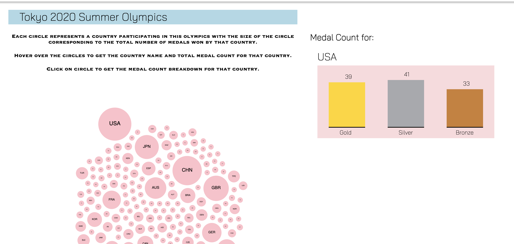

Amy Kim Email: amykim@wustl.edu ID: 464989
Jiwoo Seo Email: jiwooseo@wustl.edu ID: 457104
Project Title: Olympics of 120 Years
Link to the project repository
Link to the previous Process Book for proposal
We added the line so that the users can easily see how the gender distribution has changed over time
We improved the bubble chart - the radius of each circle corresponds to the total medal count (Gold, Silver, Bronze combined). Gold medals were weighed more than silver/bronze medals when calulating the radius.
By looking at the bubble chart, users will be able to see the difference in medal power across the Olympics (as they click around different years)
pop-up bar-chart for medal counts is not working on github Pages. We will be able to fix it soon.
This is the polished version of the final design. Click the link to see in pdf format Wire frame of final design
Our website runs for every summer Olympics. The gender chart and gold medal chart gets updated with full visualization as planned in the original proposal, but the bubble chart (force-directed chart) for the countries are incomplete yet. We have to assign x and y coordinates for each bubble and we are still looking for ways to filter the countries by their continents. Once we finish working on filtering the countries, we will be able to set a reasonable x y coordinates for each bubble to make a force-directed chart.
We are working on..